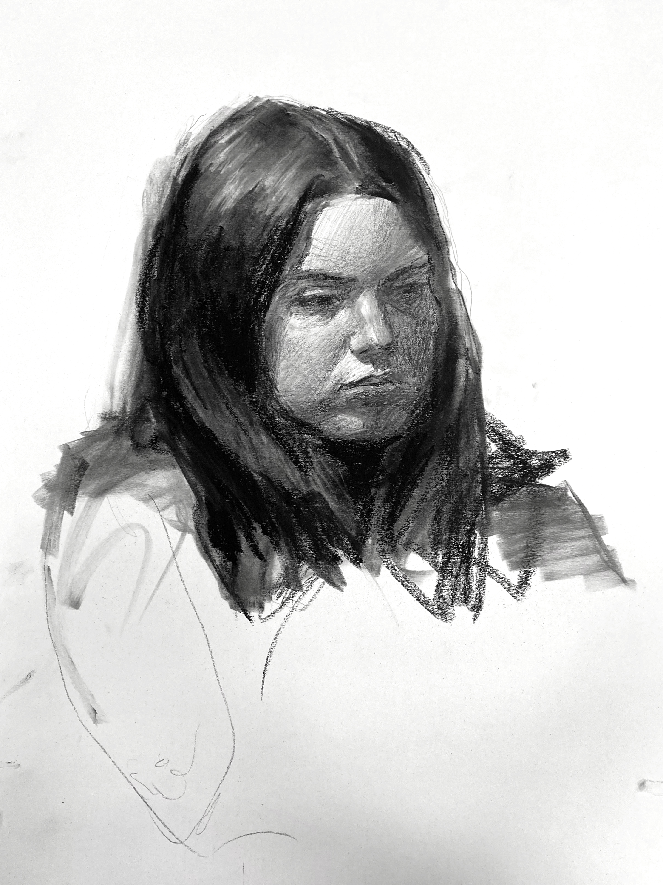
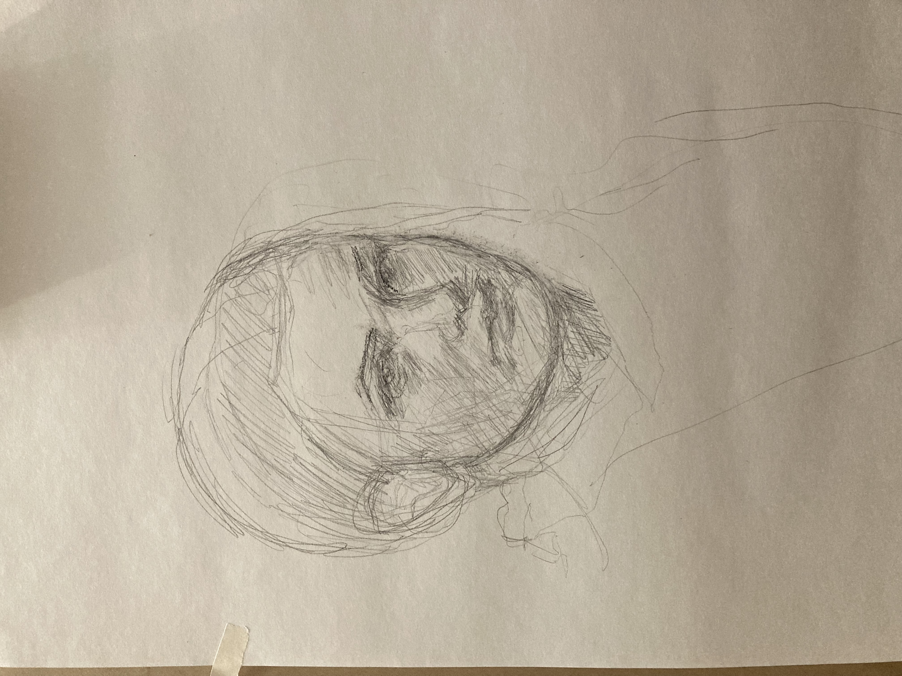
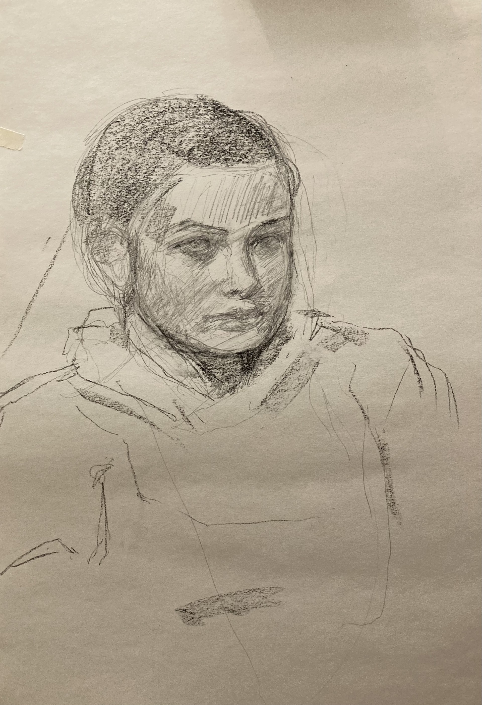
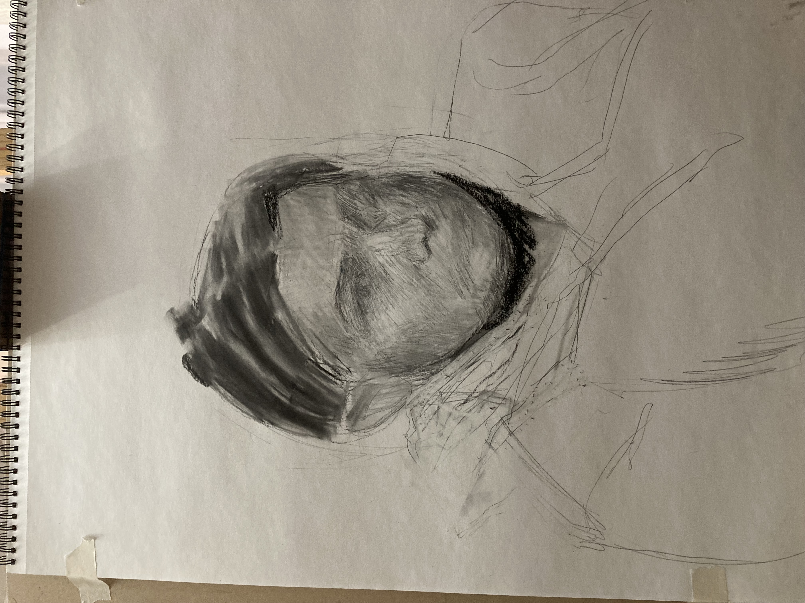

For this session, a number of the students got together and worked from a single model, much like a class session. One thing that has been very nice about this class is that each session I feel as though I am improving with every session and applying what I had learned last time. The progression feels steady and significant right now, which makes the work feel very gratifying. Part of the reason I think this is happening is that I'm just out of practice and am quickly gaining back what basic skills I had lost over the holiday break. But on the other hand, I feel like I actually am finding new approaches and applications of my existing knowledge. I'm very happy with some of the subtlety in the eyes, and I think I did much better one my edges than I had in the previous class section, where sharp edges between subtle changed of value would have really benefitted the drawing. Another thing I am happy with is what I started to do with the hair, where the highligh has multiple sudden shifts that imply multiple seperate groups or bunchings of hair. I have really enjoyed seeing how much better each result turns out over the last even with less time spent on them. This session was cut off at about two hours instead of the reccomended three, but my results still have the best likeness and best rendering this far, even though there are still some big problems. The main problem with the result of the live session is that I've noticed I almost always want to show more of the far side of the face than what is there, which ruins the perspective and makes the subject look wider or heavier than they are. In almost every situiation I draw the face in I want to make the most hidden half of their face more visible. Even with profiles I will tilt the head just so that some of the other eyelid or more of the mouth can be seen. On my next portrait, I'll about the shapes created by the nose, the terminator, the mouth, and the outline of the face. I thought I had done it this time, but I obviously wasn't paying much attention.
I didn't have to feel so bad about my studio session this time, since I think the vertical proportions were alright and my likeness was pretty solid. I did almost everything I needed to do in the live session, so my studio time was reserved for cleanup, unlike the last time where I pretty much buried the whole thing. The main real structural changes I made were to remedy the wide-face and bring down the hairline. The rest was just sharpening up the rendering. One part in particular that I'm pleased with is her hair, which is very clear without much detail. I think it is probably the most appealing part of the drawing to look at. I even toyed around with some interesting hazy effects, letting some of the background leak into the hair and the hair into the background. The effect really doesn't represent anything that you'd see in reality, but I like the way it looks and I think it helps the subject to feel like it has a place in some space rather than a drawing on paper. There's still something wrong with the perspective though. I think I would benefit from working on some planar head drawing sometime. Next time I'd also like to try just throwing down grey on my page and reworking from there. I might get truer or at least more interesting values in less time that way and I think the more sculptural approach might benefit my style of working.

Early sketch.

First break.

Second break.
End of live session.
 End of studio time.
End of studio time.
I've had experience drawing people before, and in the case of still images I think I've captured a strong likeness plenty of times, but this independent project really challenged me.
Before the start of this class, I had very limited experience working from life. After the first in-class session, I was feeling rusty, but still confident that I could bounce back from the break I had taken since the fall semester. The first drawing I had done wasn't very good, but it seemed to me like there was a noticable likeness. In my opinion, the best reason to practice from life is to get a much stronger intuition for proportion and accurate drawing. While life provides a wider dynamic range for color and value, I don't think there is nearly as much of a difference between working from a photo and life when it comes to value as there is when it comes to drawing. I'm starting to realize that working from a flat, fixed photo is about ten times easier than working from life, even with a very good model, and for me personally, working with female subjects is much more difficult. I think that in most of the situations where a line is misplaced or there is an innacuracy in a drawing, the overall effect will be more masculine than feminine. For some reason exaggerated and wrong shapes don't look as strange on drawings of men. With smoother, rounder faces, the details require more subtlety, and the drawing will flip between looking like the subject and looking nothing like them with even a slight change. I think that the only reason our first in-class session turned out as well as it did is because I was working from head-on. The session we did afterwards ended up sharing almost no resemblance and was a pretty frustrating process for me.
The subject I used for my time was my independent work was my sister, which provided me with an opportunity to redeem myself for how my previous session had gone. This independent session was also very frustrating for me. I had a tough time figuring out how to approach it. She has a pretty simple and round head, which for me meant I had to be extremely careful to avoid making her look old, which happened many times. Because I am used to working with adult male head proportions, I made quite a few fundamental errors going in, including making her irises too small, and the space from the bottom of her nose to her chin too long. By the end of the first 1.5 hour segment, I decided to restart the drawing completely, which ended up being the right decision. With these drawings, I really don't care at all about detail or value outside of providing the basic clarity necessary to produce a likeness. Given my limited time-frame, I have really been trying to focus on the part where I need the most improvement, which is getting an accurate looking drawing. By the end of our session, I was much happier with the finished result, and thought that it did look a little like her, but it took around two hours of studio time to get the drawing to a place where I actually thought it looked like the subject, even if it doesn't necessarily match the photo. Overall, I am glad I put myself through this, even though it was much more frustrating and even exhausting than I even would have expected it to be. It is very frustrating for me to know that what I'm doing is bad but feeling unable to fix it. And giving myself a fresh start halfway through really helped me to recalibrate and build a better foundation for myself. Even then, I still ended up erasing and reworking constantly in small incriments until I had something I was starting to like, which always produces a very thoughtless look to my work that lacks clarity. I think that my work would be much more appealing if I could get the likeness and proportions right from the offset. I do feel my work becoming more intentional the more I do, since I'm beginning to get a better idea of how to approach certain elements and in what order. The final result to me isn't really a success since I didn't achieve a solid drawing until afterwards when I was working from a photo, which is something that I am already comfortable doing. Ideally, I'd like to be able to get a likeness during the live process. Still, I think I actually did learn from the experience and am looking forward to seeing whether or not I do better on the next project.

Reference image.
Early sketches.
End of 1.5 hour session.
Start of new version.

At the end of the 3-hour live session.

Final drawing.